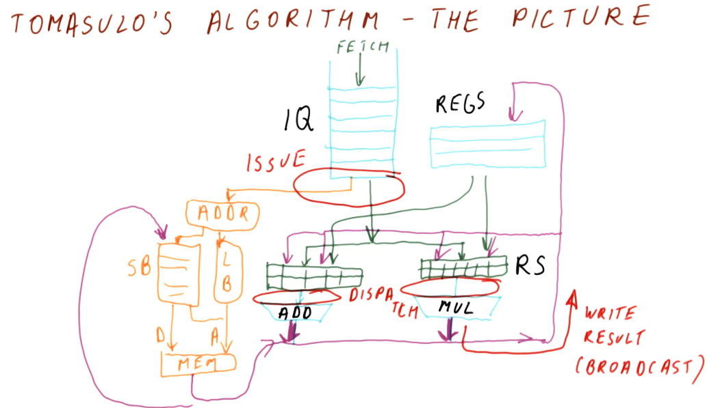

Instruction Scheduling
This lesson covers how instruction scheduling allows us to execute programs faster by dispatching more than one instruction per cycle while also handling data dependencies.
Improving IPC
As we've seen in previous lectures, there are multiple ways for us to improve IPC:
- Handling control dependencies - if we have good branch prediction we can better handle control dependencies, allowing us to fetch the correct instructions and avoid wasting cycles.
- false data dependencies - when we encounter false or name dependencies (WAR and WAW), we use register renaming to completely eliminate the hazards posed by these data dependencies.
- true data dependencies - we can improve our performance even when RAW dependencies are present using out-of-order execution. We find instructions that are not dependent upon the writes of previous instructions and execute those while we wait for the results of an instruction to be forwarded to dependent instructions.
- structural dependencies - to improve our performance we must use wider issuing processors - we'll be able to dispatch more instructions because we'll have more resources available.
Tomasulo's algorithm
Tomasulo's algorithm is the basis for modern processors' implementation of out-of-order execution. It solves the requirements for register renaming, and is able to determine which instructions have input ready and which instructions are dependent upon pending writes. Below is an excerpt from the class describing what the differences are between Tomasulo's algorithm and how modern processors are designed.

Tomasulo's algorithm - the big picture
Below is an excerpt from the class drawing out the components that comprise Tomasulo's algorithm. There are a lot of moving parts and they'll be broken down into more detail later - right now we're just summarizing the pieces. Here is a quick description of all of the parts:
- instruction queue - the instruction queue is pretty self explanatory, this is where instructions sit and wait to be issued - they are fetched from memory.
- reservation station - Tomasulo's algorithm was designed for floating point instructions, so this is where those types of instructions wait for their required values before being dispatched. The reservation stations are split into simple instructions that require and adder and more complex instructions that might require a multiplier. Reservation stations enable Tomasulo's algorithm to determine which instructions are ready to execute - implementing out-of-order execution.
- registers - once instructions are dispatched from the reservation stations , the values they generate are written (broadcasted) to the registers. Instructions in other reservation stations will be able to acquire their forwarded values so that they can be dispatched as well.
On the left-hand side of this picture, you'll see that there's logic to cover load and store instructions as well. These were not handled by Tomasulo's algorithm, but modern processors now handle all instruction types similar to Tomasulo's algorithm. The results of the load and store instructions are also broadcasted so that other instructions waiting to be dispatched can take advantage of the values before they are written.
There are three stages of Tomasulo's algorithm:
- issue - this is when an instruction is sorted from the instruction queue into either load / store or a floating point instruction.
- dispatch - this is when an instruction is actually executing using processor resources.
- write result (broadcast) - this is when the result of the instruction is written to the registers file for later use by dependent instructions.
Note - the instructions in the reservation stations also have two inputs per station to receive broadcasts. This is to provide dependent instructions with the necessary values to be dispatched as early as possible.
